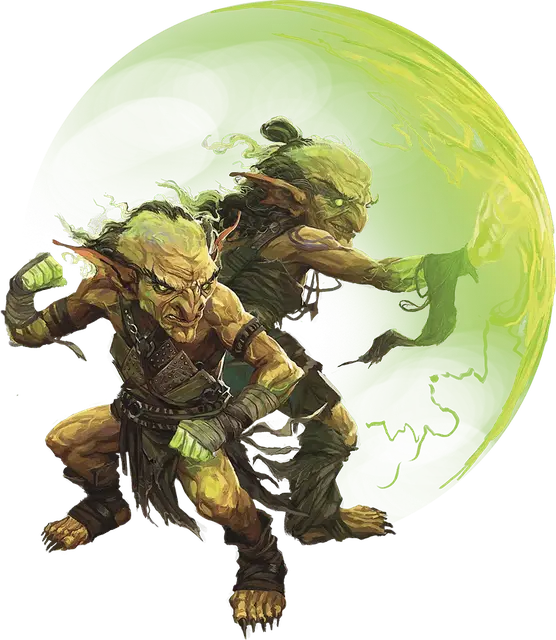

Гоблин–пси-командир
Goblin Psi Commander
Маленькая Аберрация (Гоблиноид), любое мировоззрение

Класс Доспеха 16 (проклёпанный кожаный доспех)
Хиты 58 (13к6 + 13)
Скорость 30 футов
| мод | спас | ||
|---|---|---|---|
| СИЛ | 12 | +1 | +1 |
| ЛОВ | 19 | +4 | +4 |
| ТЕЛ | 13 | +1 | +1 |
| мод | спас | ||
|---|---|---|---|
| ИНТ | 17 | +3 | +5 |
| МДР | 15 | +2 | +4 |
| ХАР | 10 | +0 | +0 |
Навыки Скрытность +8
Сопротивление урону психическая энергия
Чувства тёмное зрение 60 футов, пассивное Восприятие 12
Языки Общий, Гоблинский, Телепатия 60 фт.
Опасность 4 (1100 опыта)
Бонус мастерства +2
Особенности
Ментальный взрыв. Когда гоблин умирает, его сдерживаемая ментальная энергия взрывается психическим взрывом. Каждое существо в пределах 5 футов от него должно преуспеть в спасброске Интеллекта Сл 13, иначе получит 10 (4к4) урона психической энергией.
Ментальная стойкость. Гоблин совершает с преимуществом спасброски против эффектов, которые могут его очаровать или испугать.
Действия
Мультиатака. Гоблин совершает три атаки Психическим клинком.
Психический клинок. Рукопашная или дальнобойная атака оружием: +6 к попаданию, досягаемость 5 футов или дистанция 60 футов, одно существо. Попадание: 11 (2к6 + 4) урона психической энергией и цель должна вычесть 1к4 из следующего броска атаки или спасброска, который она совершает до конца следующего хода гоблина.
Использование заклинаний (псионика). Базовой характеристикой гоблина является Интеллект. Он может накладывать следующие заклинания, не нуждаясь ни в каких компонентах:
• Неограниченно: волшебная рука [mage hand] (рука невидима), малая иллюзия [minor illusion]
• 1/день каждое: очарование личности [charm person], диссонирующий шёпот [dissonant whispers], телекинез [telekinesis]
Синаптический разрыв (перезарядка 5–6). Гоблин высвобождает сферу психической энергии радиусом 30 футов, сосредоточенную в точке, которую гоблин может видеть в пределах 60 футов от себя. Каждое существо в этой области должно совершить спасбросок Интеллекта Сл 13. В случае провала существо получает 14 (4к6) урона психической энергией и становится недееспособным до конца следующего хода гоблина. В случае успеха существо получает только половину этого урона.
Реакции
Ловкий побег. Гоблин совершает действие Засада или Отход.
Псионический щит. Когда по гоблину или одному из его союзников в пределах 15 футов от него попадают броском атаки, гоблин создаёт силовой щит. Цель атаки получает бонус +3 к КД против броска атаки, спровоцировавшего эту реакцию, что потенциально может привести к промаху.
Описание
Особенности появления псионического гоблина различаются. Некоторые рождаются изменёнными в результате утечки энергии из Дальнего Предела. Другие трансформируются с помощью своей псионической силы или заключают соглашения с другими Аберрациями, которые помогают им трансформироваться в обмен на их службу в качестве ударных отрядов. В любом случае, результатом становится один тот же гоблин с неестественной и едва сдерживаемой психической силой.
Псионические гоблины часто с трудом справляются с бурной психической энергией в своем разуме и теле. Те псионические гоблины, которые научатся безопасно использовать эту психическую силу, станут грозной силой в бою. Псионические гоблины часто дополняют свои боевые навыки телекинезом, а скрытные отряды псионических гоблинов-воинов могут общаться посредством телепатии, что делает их отличными лазутчиками и устроителями засад.
Гоблин–пси-командир
Гоблины–пси-командиры — одни из немногих псионических гоблинов, которым удаётся полностью контролировать внутреннюю силу. Пробудившись к полной широте своих псионических способностей, гоблины–пси-командиры владеют клинками чистой психической энергии. Они могут создавать барьеры ментальной силы, сбивая врагов с ног одним разрывающим разум взрывом.